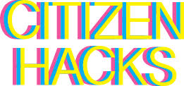
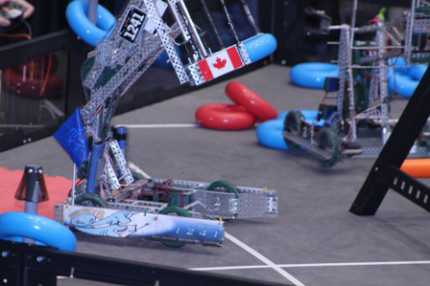
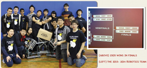

Get in touch
Office: Computing Clubhouse C 14
Our office phone number is: 416-395-3310 ext. 20091
Email : helen.strelkovska@tdsb.on.ca
Schedule

My Schedule
Day 1
2019/2020 school year:
| Period | Class | Room |
| Period 1 8:45 - 10:05 |
ICS3U7-03(A) | C-15 |
| Period 2 10:10 - 11:25 |
ICS4U7-01 (B) | C-15 |
| Lunch 11:25 - 12:25 |
Lunch | |
| Period 3 12:25 - 1:40 |
TEJ3/4M-01 | C-15 |
| Period 4 1:45 - 3:00 |
C-14 |

My Schedule
Day 2
2019/2020 school year:
| Period | Class | Room |
| Period 1 8:45 - 10:05 |
C-14 | |
| Period 2 10:10 - 11:25 |
ICS3U7-03 (A) | C-15 |
| Lunch 11:25 - 12:25 |
Lunch | |
| Period 3 12:25 - 1:40 |
C-14 | |
| Period 4 1:45 - 3:00 |
TEJ3/4M-01 (C) | C-15 |
Latest news
The Citizens Hack starts on Friday September 9th.

The Citizens Hack is a hackathon for secondary and post-secondary students and it kicks off on Friday (tomorrow) at CSI in Toronto.
Dates: Fri., Sep. 6, 2019 – Sun., Sep. 8, 2019
Location: Centre for Social Innovation - Annex, Toronto
Can Hack
Can Hack is running again this year. This is a free (and very fun) competition for Canadian high school students organized by Ryerson and it uses the CMU picoCTF platform as a cyber security contest. You can find more details here.
VEX robotics events in 2018/2019 school year


Vex Robotics Club will start at the beginning of December ( when we will receive parts to build a robot)
Click here for VEX Robotics Signup
2019 CCC On-line Grader instructions
Students who have registered for the 2019
Canadian Computing Competition (CCC) need to register for the on-line grader,
so that you can practice using the system before the contest date of
February 20, 2019.
Information on how to register and use the on-line grader can be found at:
http://cccgrader.com/register.php
You will need CEMC "school number". Our school number is
?????
Ask me to approve your registration.
After approval login and try the grading system.
http://cccgrader.com/
I urge you to register and to test the system before hand.
Canadian Computing Competition
Canadian Computing Competition will be held on Wednesday, February 20, 2019 in room C-15 from 9:00 AM to 12:30 PM.
The registration is $8.00.
The deadline for the registration is February 16.
If you will not register and pay by February 16, you can participate anyway.
You need to pay during the competition $8.00 - $11.00
More info about Canadian Computing Competition (CCC) www.cemc.uwaterloo.ca/contests/computing.html
This is the link to the past competition questions past CCC contest questions with solutions
ECOO programming contest
The Toronto District School Board's qualifying programming contest for ECOO will be:
Date:TDSB level - Saturday March 23rd??, 2019
Regional: Saturday April 27th, 2019
Finals: Saturday, May 11th, 2019
Usual Time: 10:00am – 2:00pm
Location: York University, Computer Science & Engineering Building,
Lecture Halls B & C, (No. 19 on the map at
http://maps.info.yorku.ca/keele-campus/)
• Setup is from 9:00 am to 10:00 am. The contest will run from 10:00 am until 1:00 pm. A pizza lunch will be served following the competition.
• Each team is expected to bring its own computer equipment, including the power cord(s). Laptops are encouraged. The computer must have a USB port.
• No books (resource, textbooks, or manuals) are allowed. No previously written code (in either printed or electronic form) is permitted.
• The only hand-held electronics permitted are calculators and English translators.
• We will follow the rules of the ECOO Regional and Final contests. See details at
http://www.ecoocs.org/pdf/Contest_Rules.pdf
• The top 13 teams from the TDSB will advance to the ECOO Central Ontario programming contest. The TDSB will also send up to 5 all-female teams to the Regional competition.
• Past contests can be accessed at
http://ecoocs.org/problems.php